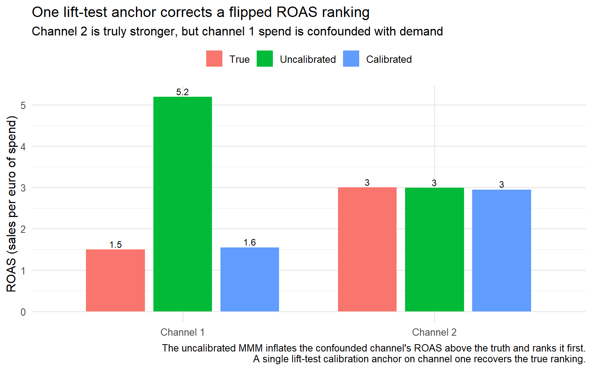

flowchart BT
L5["<b>Layer 5: Decision</b><br/>Budget optimisation with uncertainty<br/>Consumes the calibrated posterior"]
L4["<b>Layer 4: Calibration</b><br/>Lift tests and quasi-experiments<br/>The layer most implementations skip<br/>(Zhang et al. 2023; Brodersen et al. 2015)"]
L3["<b>Layer 3: Estimation</b><br/>Bayesian fit, geo-hierarchical<br/>(Jin et al. 2017; Sun et al. 2017)"]
L2["<b>Layer 2: Transform</b><br/>Adstock and saturation with priors<br/>(Jin et al. 2017)"]
L1["<b>Layer 1: Data</b><br/>Sales, spend by channel, controls<br/>at the right geography and granularity"]
L1 --> L2
L2 --> L3
L3 --> L4
L4 --> L5
classDef standard fill:#eef5fb,stroke:#2C7FB8,color:#1f5f8b;
classDef calib fill:#fbe6e3,stroke:#D95F0E,color:#b23a2b;
class L1,L2,L3,L5 standard;
class L4 calib;
Marketing Mix Modeling: The Bayesian Way
marketing analytics
causal inference
bayesian
mmm
R
A practitioner’s walkthrough of Bayesian marketing mix modeling: what an MMM is, why the Bayesian framing is used, the five ways it fails to identify what it claims to measure, the three dominant frameworks, the calibration bridge to experimental and quasi-experimental causal identification, a five-layer system architecture, an R simulation where an unobserved confounder flips the channel ranking until a lift-test anchor corrects it, and a review checklist for MMMs.
A marketing team runs a Bayesian marketing mix model. The output reports that television returns 4.2 in revenue per euro of spend and that paid search returns 2.9. A chief marketing officer reallocates next year’s budget on those two numbers. Six months later, the reallocation has not produced the gain the model implied. The model did not lie. Its priors carried a large share of the reported effect, and the data was never informative enough to overturn them. The 4.2 and 2.9 figures here are a stylised example rather than a documented case, but the pattern they illustrate is general: a marketing mix model presents itself as a measurement of channel effectiveness when it is a correlational regression whose conclusions are carried in large part by its priors.
This persists because the industry treats the model output as ground truth and rarely interrogates where the number came from. The foundational Bayesian MMM paper, Jin, Wang, Sun, Chan and Koehler (2017) of Google, on which the modern MMM industry builds, warns in its own text that prior distributions have a large impact on the posteriors when the sample size is small and may lead to biased estimates, and that the optimal media mix implied by the model has a large variance because the parameter estimates themselves have large variance. A typical MMM has two to three years of weekly data, roughly one hundred to one hundred and fifty observations, spread across ten or more channels that tend to move together. That is the small-sample, high-collinearity regime the paper describes. Dew, Padilla, and Shchetkina (2024), of the Wharton School and London Business School, prove something sharper. The nonlinear saturation effects and the time-varying effects that MMMs routinely estimate are often not separately identifiable, so the same observed data pattern can be fit by two models that recommend opposite budget allocations. They show the conflation is especially severe when the marketing variables are autocorrelated, a condition the standard adstock transform guarantees, and the reliable fix is to design experiments that manipulate spending in ways that pin down the model form. Chan and Perry (2017), also of Google, state the underlying problem without softening it. MMMs produce correlational, not causal, results except under narrow conditions.
This post treats marketing mix modeling as a Bayesian inference problem and asks what makes its outputs defensible. Part I covers what an MMM actually is, the decomposition of sales into a base level, carryover-and-saturation-transformed channel effects, and controls. Part II explains why the Bayesian framing is used specifically. Part III walks through five ways an MMM breaks, anchored by the identification results of Dew et al. (2024) and the warnings of Jin et al. (2017). Part IV compares the three dominant frameworks, PyMC-Marketing, Meridian, and Robyn. Part V is the heart of the post, the calibration bridge that connects an MMM to experimental and quasi-experimental causal identification. Part VI describes the architecture of a serious MMM. Part VII walks through a simulation showing how the same data supports opposite allocations, and how calibration fixes it. Part VIII is the review checklist I run before I sign off on any MMM in production. Full implementation throughout. This post is not a tutorial on fitting a specific MMM package end to end, and it does not adjudicate between specific priors for specific industries. The aim is to explain what an MMM is, why the Bayesian framing is used, where it breaks, and why experimental calibration is the only thing that makes its numbers defensible.
Part I. What a marketing mix model actually is
I.1 The decomposition
A marketing mix model decomposes an aggregate outcome, typically weekly or monthly sales or conversions, into three pieces. The first is a baseline level that would have occurred without marketing. The second is a sum of contributions from each marketing channel. The third is a set of control variables that capture non-marketing drivers such as seasonality, price, distribution, and macroeconomic conditions. The model is fit on aggregate time-series data, not on individual-level data. That is both its defining feature and the source of most of its difficulties.
The decomposition has a single compact form.
\[ y_t = \beta_0 + \sum_{c=1}^{C} \beta_c \, f_c(x_{c,t}) + \sum_{k=1}^{K} \gamma_k \, z_{k,t} + \varepsilon_t \]
The outcome \(y_t\) at time \(t\) is the sum of a baseline \(\beta_0\), the contributions of \(C\) marketing channels, the contributions of \(K\) control variables \(z_{k,t}\), and an error term \(\varepsilon_t\). In the channel term, \(x_{c,t}\) is the spend or impressions in channel \(c\) at time \(t\), and \(f_c\) is a transform that captures carryover and saturation. The coefficients \(\beta_c\) are the objects the advertiser cares about, because return on ad spend and optimal budget allocation are derived from them.
The notation in that equation holds for the rest of the post. The outcome is \(y_t\), the baseline is \(\beta_0\), each channel coefficient is \(\beta_c\), and the channel transform is \(f_c\). Inside \(f_c\) the adstock decay is \(\lambda_c\), and the saturation curve has a half-saturation point \(\kappa\) and a steepness \(\alpha\). Control variables are \(z_{k,t}\) with coefficients \(\gamma_k\). Return on ad spend is written ROAS, and when it enters the model as a parameter it is the reparameterized ROAS parameter of Zhang et al. (2023), introduced in Part V.
The idea is old. It goes back to the marketing-mix concept of Borden (1964), who described the marketing manager as a mixer of ingredients, and it has been a regression-based practice since the 1960s. The modern resurgence, driven by the collapse of individual-level tracking after privacy changes and the deprecation of third-party cookies, returned the MMM to the centre of marketing measurement precisely because it uses aggregate data and needs no user-level identifiers. Ravid (2024) documents this motivation directly for the online insurer Lemonade, whose MMM was built specifically because user tracking had become unreliable.
NoteWhy MMM came back
Marketing mix modeling has been a regression-based practice since the 1960s (Borden 1964). It returned to prominence after privacy changes and third-party cookie deprecation made individual-level attribution unreliable, because an MMM uses only aggregate data and needs no user-level identifiers. Ravid (2024) documents this directly in the Lemonade case, where the model was built to measure marketing without customer-level data.
I.2 Adstock, the carryover transform
Advertising does not affect sales only in the week it runs. A television campaign this week influences purchases for several weeks afterward, with a decaying effect. This carryover is called adstock, and it is the first of the two transforms inside \(f_c\). The simplest form is geometric adstock. The effective spend at time \(t\) is the current spend plus a decayed fraction of the previous period’s effective spend.
\[ \text{adstock}(x_{c,t}) = x_{c,t} + \lambda_c \, \text{adstock}(x_{c,t-1}), \qquad 0 \leq \lambda_c < 1 \]
The decay parameter \(\lambda_c\) controls how long the effect of spend persists. A high \(\lambda_c\), close to one, means a long carryover, typical of brand and television. A low \(\lambda_c\), close to zero, means a short carryover, typical of paid search and direct response. Jin et al. (2017) also introduce a more flexible delayed-adstock form that allows the peak effect to occur some weeks after the spend, which matters for channels whose effect builds before it decays.
Adstock introduces autocorrelation into the transformed marketing variable by construction. The effective spend at time \(t\) depends on the effective spend at \(t-1\), which depends on \(t-2\), and so on down the series. This autocorrelation is exactly the condition under which Dew et al. (2024) show that nonlinear and time-varying effects become hard to separate. The transform that makes the model realistic is also the transform that makes it fragile. Part III returns to this.
I.3 Saturation, the shape transform
The second transform inside \(f_c\) captures diminishing returns. The first euro of spend in a channel is more productive than the ten-thousandth, because audiences saturate and the most responsive customers are reached first. This shape effect is modelled with a concave, saturating function. The most common choice is the Hill function, borrowed from pharmacology, which maps spend to a response that rises and then flattens.
\[ \text{saturation}(x) = \frac{x^{\alpha}}{x^{\alpha} + \kappa^{\alpha}} \]
The parameter \(\kappa\) is the half-saturation point, the level of spend at which the channel reaches half of its maximum response. The parameter \(\alpha\) controls the steepness of the curve. Together they determine the shape of the response, and the shape determines the marginal return on the next euro of spend, which is the quantity budget optimisation actually depends on. Jin et al. (2017) apply the saturation transform after the adstock transform, so the channel contribution is the saturated response to the carryover-adjusted spend.
The saturation transform is where the nonlinearity in the MMM lives. Dew et al. (2024) show that this nonlinearity is often not separately identifiable from a model in which the channel effect is linear but varies over time. A saturating response to steady spend and a linear response with a declining coefficient can produce the same observed data. The two imply different optimal allocations, and the data alone cannot always tell them apart. This is the central identification problem the post builds toward, and it is introduced here only as a flag.
I.4 Putting it together, and why it needs estimation
The channel transform \(f_c\) is the composition of adstock and saturation. First the spend is adjusted for carryover. Then the carryover-adjusted spend is passed through the saturation curve. Then the result is scaled by the coefficient \(\beta_c\). The full model is the decomposition from I.1 with each \(f_c\) expanded into this two-stage transform, plus the controls, plus the error. The parameters to be estimated are the baseline, the channel coefficients, the adstock decays, the saturation shape parameters, and the control coefficients. For ten channels this is already several dozen parameters, estimated from roughly one hundred to one hundred and fifty weekly observations.
The parameter count relative to the sample size is the first sign of trouble. A model with several dozen parameters and one hundred and fifty observations, fit on channels that move together, is a model in which the data does not strongly constrain the parameters. Ordinary least squares on such a model produces unstable, high-variance estimates that flip sign with small changes in the data. This is the problem the Bayesian framing is introduced to address, and it is the subject of Part II. The Bayesian approach does not solve the identification problem. It regularises the estimates using priors, which is both what makes the model usable and what makes it fragile.
The MMM is a regression with a large parameter count, a small sample, and channels that move together. That combination is why the Bayesian framing is used, not as a philosophical preference but as a practical necessity. Part II explains what the Bayesian approach adds, why priors are the mechanism that makes the model estimable, and why the same priors that rescue the model are the source of the fragility that Jin et al. warned about.
Part II. Why Bayesian, specifically
Part I ended with a regression that has too many parameters, too few observations, and channels that move together. Ordinary least squares on a model like this produces estimates that are unstable and that flip sign under small changes in the data. Chan and Perry (2017) make the same point from the practitioner’s side: the information content of a single MMM dataset is low relative to the number of parameters, and correlated inputs produce coefficients with high variance and poor attribution. The Bayesian framing is the standard response to this problem, and it is a practical response rather than a philosophical one. Priors regularise the estimates, hierarchical structure borrows strength across geographies, and the posterior distribution reports the uncertainty that a point estimate would hide.
This section covers four things the Bayesian framing provides. It regularises the estimates through priors. It adds identifying variation through geo-hierarchical structure. It quantifies uncertainty through the posterior. And, stated honestly at the end, it carries a cost, because the priors that rescue the model also carry its conclusions when the data is weak.
II.1 Priors as regularisation
In a Bayesian MMM, every parameter is given a prior distribution that encodes what is plausible before the data is seen. This includes the channel coefficients, the adstock decays \(\lambda_c\), and the saturation shape parameters \(\kappa\) and \(\alpha\) from Part I. The posterior combines the prior with the likelihood, which we can write compactly as
\[p(\theta \mid y, X, Z) \propto L(y \mid X, Z, \theta)\,\pi(\theta).\]
When the data is informative, the likelihood dominates and the posterior is driven by the data. When the data is weak, the posterior stays close to the prior \(\pi(\theta)\). For a model with several dozen parameters and roughly one hundred and fifty weekly observations, the data is weak for many parameters, and the priors do real work.
The priors on adstock decay and saturation shape are the clearest case. A prior that keeps \(\lambda_c\) inside \((0,1)\) and concentrated away from the extremes stops the estimator from assigning a channel an implausibly long or short carryover only because the noise in the data happens to support it. Jin et al. (2017) rely on exactly this: they constrain the retention rate to a prior defined on \([0,1)\) and place a prior on the half-saturation point over the observed range of spend, so that the shape can be estimated within that range even when the parameter itself is barely identified. This is the same mechanism as ridge or LASSO regularisation in a frequentist model, which shrink coefficients toward zero to reduce variance. The Bayesian version makes the shrinkage explicit and interpretable, because the prior states what is plausible and the posterior updates it. Dew et al. (2024) make the equivalence direct, noting that priors in Bayesian inference play the role of the regulariser.
Regularisation is a response to weak identification, not a cure for it. When two features of the model are not separately identified by the data, as Dew et al. (2024) show for nonlinear and time-varying effects, the prior decides which of the two the posterior favours. Jin et al. (2017) document the analogue for the shape function itself: within a finite range, the Hill curve can be reproduced almost exactly by a very different set of half-saturation, slope, and coefficient values, so the individual parameters are near unidentifiable even when the response curve is estimated well. The regularisation makes the model estimable. It does not make the estimate correct. The estimate is correct only if the prior points in the right direction, and the data cannot confirm that it does. That is the seed of the fragility, and Part III develops it.
II.2 Geo-hierarchical structure adds identifying variation
The core difficulty of an MMM on national data is that there is not enough variation in media spend to identify the channel effects. Spend moves slowly, channels move together, and the national series carries one observation per week. Sun, Wang, Jin, Chan and Koehler (2017), in their geo-level Bayesian hierarchical media mix model, address this with sub-national data. Instead of one national time series, the model uses one series per geographic region, with region-level coefficients drawn from shared national-level distributions. In their notation the geo-level media and control coefficients are random effects centred on population-level hyperparameters, so each region deviates from a common mechanism rather than being estimated in isolation.
The hierarchy buys two things. The first is a larger effective sample size and more useful variation in spend, because different regions receive different spend levels at different times, which is the variation the national series lacks. Sun et al. (2017) show that spend at the geo level generally has a wider range than at the national level, and that the resulting model produces tighter credible intervals, which they frame as protection against unsound reallocation decisions driven by noise. The second is a reduction in ad targeting bias. When spend is correlated with regional demand, Sun et al. (2017) show that under weak conditions the national average has a higher correlation with base demand than the individual regions do, so the geo structure lowers that correlation and lets the model separate the spend effect from the regional baseline.
The structure is not free. Sun et al. (2017) show that when geo-level data is missing for some channels and those channels are imputed from national data, the estimates deteriorate as more channels are imputed, because the naive imputation adds no useful variation over time. The hierarchy helps only for the channels that carry genuine sub-national variation. In my work I treat the availability of real geo-level spend variation as the single biggest determinant of whether an MMM will be identified well enough to trust, and I say so before the model is built rather than after.
NoteGeo variation is the scarce resource
The single biggest determinant of whether an MMM is well identified is whether genuine sub-national variation in media spend exists. Sun et al. (2017) show that when it does, the geo-hierarchical model tightens credible intervals and reduces targeting bias relative to a national model. When channels are imputed from national data, they carry no such variation, and the estimates for those channels deteriorate as more of them are imputed.
II.3 Uncertainty quantification and the budget decision
The Bayesian posterior is a distribution over parameters, not a point estimate. Every quantity derived from the parameters inherits a full distribution, including the return on ad spend for each channel, the marginal return on the next euro, and the optimal budget allocation. Jin et al. (2017) show how this works in practice: they plug posterior samples of the parameters into the ROAS and mROAS formulas to obtain posterior distributions for those metrics, rather than a single number. The advertiser can read the best estimate of a channel’s ROAS together with the credible interval around it, and can carry that uncertainty into the budget decision.
The consequence for decisions is direct. Take a stylised example. A point estimate of ROAS 4.2 invites a confident reallocation. A posterior that places the ROAS somewhere between 1.5 and 7.0 with a best estimate of 4.2 invites a more careful decision, because the downside of the reallocation is now visible. These figures are illustrative, chosen to make the point rather than drawn from any specific dataset. Jin et al. (2017) make the underlying point with their own data: the optimal media mix implied by the model has a large variance because the parameter estimates have large variance, and in some of their scenarios the variation in predicted sales across posterior samples is as large as, or larger than, the variation caused by changing the media mix itself. An advertiser who acts on the point estimate without the variance is acting on a number the model does not strongly support.
In my work I refuse to present an MMM ROAS as a point estimate. The credible interval is not a technical footnote. It is the difference between a decision the data supports and a decision the data cannot distinguish from its opposite. When the interval is wide, the honest recommendation is that the model is not decision-grade for that channel, and that either more data or a calibration experiment is required before the number can carry a budget reallocation. The Dynamic Pricing post in this series makes the same argument about elasticity estimates, and the logic transfers without change.
II.4 The cost of the priors
The priors that make the model estimable are the same priors that carry its conclusions when the data is weak. This is not a contradiction. It is the defining trade-off of a Bayesian MMM. In the small-sample, high-collinearity regime that every real MMM operates in, the data cannot separate many of the parameters, and the posterior for those parameters sits close to the prior. Jin et al. (2017) show this cleanly across sample sizes: with a few hundred weekly observations the shape and carryover parameters are biased and the posteriors are largely determined by the priors, while the same model recovers the true values when the sample is grown to sixty years of data. The model reports a number, the number looks like a measurement, and a large share of it is the prior the modeller chose.
This is the first of the two warnings the Opening set out, stated in the paper that launched the modern framework. It is routinely ignored, because the MMM output is consumed as ground truth and the provenance of the number is not interrogated. The defensible position is that a Bayesian MMM is a structured way of combining prior belief with weak data, and that its outputs hold up only when the priors themselves hold up, which in practice means they are calibrated against experiments. Part III develops the specific ways the model breaks when they are not, and Part V develops the calibration that repairs it.
The Bayesian framing is the right response to the estimation problem, and it buys regularisation, identifying variation, and honest uncertainty. What it does not buy is identification. Part III walks through five specific ways an MMM breaks, each of them an instance of the data being unable to determine what the model claims to measure, and each of them pointing to the same fix: calibration against an experiment.
Part III. Where the MMM breaks
Part II established what the Bayesian framing buys. Priors act as regularisation and keep the estimator stable when the parameter-to-observation ratio is unfavourable. The geo-hierarchical structure of Sun et al. (2017) supplies identifying variation that a national time series alone does not have. The posterior reports honest uncertainty rather than a single point. None of that buys identification. Regularisation makes the estimate stable, but stability is not the same as being right, and a stable estimate anchored to a prior can be confidently wrong. Part III is about what identification failure looks like once the model is running and producing numbers a client will act on.
There are five failure modes, ordered from the deepest to the most general. Non-identifiability of nonlinear versus time-varying effects. Prior sensitivity. Multicollinearity across channels. Unobserved confounders. And the general failure that correlation is not causation. The first is a formal proof that two fundamentally different models fit the same data and recommend opposite budgets. The last is the statement that an MMM is a correlational model asked to answer a causal question, and it contains the other four as special cases. By the end you should be able to walk into a model review and name which mode is operating, and see why all five converge on the same fix, experimental calibration, which Part V develops.
III.1 Nonlinear and time-varying effects are not separately identifiable
The saturation transform from Part I encodes a nonlinear effect. Response to spend is concave, governed by the half-saturation point \(\kappa\) and the steepness \(\alpha\), and the marginal return declines as spend rises. A separate and equally common modelling choice lets a channel’s effectiveness vary over time, because creative quality, competitive pressure, and audience composition change across a year. These look like different assumptions about the world. Dew, Padilla, and Shchetkina (2024) prove they are often not separately identifiable from the data. A concave saturation response to steady spend and a linear response whose coefficient declines over time can generate the same observed sales pattern. The data does not tell them apart.
Dew et al. (2024), of the Wharton School and London Business School, establish this through theory and simulation, and demonstrate it on real marketing mix data. Their central condition is precise. The conflation between nonlinear and time-varying effects is especially likely in the presence of autocorrelated marketing variables. That condition is not exotic. It is the default. The adstock transform from Part I introduces autocorrelation into every channel by construction, because effective spend at time \(t\) carries a decayed share of effective spend at \(t-1\) through the decay rate \(\lambda_c\). The transform that makes the model realistic is the same transform that makes the two effect types indistinguishable. The authors show the conflation is prevalent across numerous real-world applications, not a theoretical curiosity confined to a constructed example.
The two model types imply different optimal allocations. A saturation model says the marginal return on a high-spend channel is low, so budget should move to under-saturated channels. A time-varying model says the channel worked in some periods and not others, so the spend should be timed rather than moved. Read the same sales history through one lens and you shift money between channels. Read it through the other and you keep the channels and change the calendar. The advertiser cannot know which recommendation is right from the data alone, because the data supports both. Dew et al. (2024) show the reliable fix is to design experiments that strategically manipulate spending in ways that pin down the model form. This is the calibration argument the whole post builds toward, stated here by the authors who proved the problem.
III.2 Prior sensitivity
Part II established that in the small-sample, high-collinearity regime the posterior for many parameters stays close to the prior, because the likelihood contributes little curvature and the prior supplies the rest. Prior sensitivity is the direct consequence. The reported result depends on the prior the modeller chose, and a different defensible prior produces a different result. When the data is weak this dependence is not a minor perturbation around a well-identified value. It can move the estimated ROAS of a channel far enough to flip a budget decision from invest to divest.
Jin, Wang, Sun, Chan, and Koehler (2017), in the foundational Bayesian MMM paper, document this directly. Their simulation studies show the model can be estimated very well on large data sets, but that prior distributions have a big impact on the posteriors when the sample size is small, and may lead to biased estimates. They go further and show that the optimal media mix implied by the model has a large variance, because the parameter estimates themselves have large variance. The paper that established the Bayesian MMM is the same paper that recorded its central fragility. The method has been cited far more often than the caveat.
Prior sensitivity means an MMM result is only as defensible as the prior behind it. When the prior is set by convention or by the modeller’s intuition, the ROAS number is a formalisation of that intuition dressed as a measurement. The fix, developed in Part V, is to derive the prior from an experiment rather than from intuition, which is what the ROAS reparameterisation of Zhang et al. (2023) makes operationally possible. Until the prior comes from evidence, prior sensitivity is a property of the answer, not a flaw the modeller can tune away.
III.3 Multicollinearity across channels
Marketing channels move together. When a brand runs a campaign it usually raises spend across television, paid social, and display at the same time, in response to the same seasonal or strategic trigger. That correlated movement is multicollinearity, and it is severe in MMM data because the channels are driven by shared planning decisions rather than by independent variation. When two channels rise and fall together, the regression cannot attribute the joint movement to one rather than the other, and the coefficient it assigns to each becomes unstable and sensitive to small changes in the sample.
Ben Hammouda and colleagues (2025), in their study of the Opella case at the 2025 Study Group Mathematics with Industry, address this with a Bayesian hierarchical shrinkage approach. Their contribution is a set of structured priors that exploit group-level similarities among related channels while allowing channel-specific deviations, borrowing strength across channels rather than estimating each in isolation. The approach improves parameter stability and interpretability under collinearity. It does so by imposing more structure through the prior, which returns the problem to the prior sensitivity of III.2. Multicollinearity and prior sensitivity are two views of one underlying condition. The data does not contain enough independent variation to separate the channels, so whatever separation the model reports has been supplied by the prior and the shrinkage structure.
Under multicollinearity the split of credit between two channels that move together is set by the prior and the shrinkage, not by the data. An advertiser who reallocates budget between two collinear channels on the strength of their estimated coefficients is acting on a split the data never identified. The fix is the one III.1 and III.2 also point to. Introduce independent variation through an experiment that moves one channel while holding the other, so the channels can be told apart by evidence rather than by assumption.
III.4 Unobserved confounders
An MMM regresses sales on spend and controls. The identifying assumption is that, conditional on the controls, spend is as good as randomly assigned with respect to the sales outcome. That assumption fails when an unobserved variable drives both spend and sales. Seasonal demand is the canonical case. A retailer raises spend in the weeks before a holiday because it expects high demand, and sales rise in those weeks because of the holiday. If the model does not fully control for the demand driver, it attributes the holiday sales to the spend that happened to accompany them. The estimated effect is confounded upward.
This is the confounding problem the Elasticity and Forecasting posts in this series developed in general terms, now made specific to MMM. Chan and Perry (2017) state it as the reason MMMs produce correlational rather than causal results. The spend variable is chosen by the advertiser in response to expected demand, so it is endogenous, and no regression on observational data recovers the causal effect without assuming the confounders are fully controlled. That assumption is rarely defensible, because the advertiser’s demand expectations are not written down anywhere the model can read them. The practical consequence is that MMM ROAS estimates for demand-correlated channels, such as seasonal brand campaigns, are biased upward in a direction the model cannot detect from its own residuals.
Unobserved confounding means the MMM systematically over-credits channels whose spend is timed to expected demand. The channels that look most effective in the output are often the channels whose spend is best correlated with demand the model does not observe. The fix is causal identification. An experiment that randomises spend breaks the correlation between spend and the unobserved demand, and a quasi-experimental design of the kind Part V develops recovers the effect when a full experiment is not feasible.
III.5 Correlation is not causation
The four preceding failure modes are specific mechanisms. This one is the general statement that contains them. An MMM is a regression on aggregate observational data, and a regression on observational data estimates a conditional expectation, the average sales observed alongside a given level of spend. It does not estimate a causal effect, what sales would become if spend were changed. The distinction is the one the Forecasting post in this series developed. The model identifies the association between spend and sales in the historical record, not the response to an intervention. Every budget reallocation is an intervention, and the model was fit on data generated without it.
Chan and Perry (2017) make the statement without qualification. MMMs are regression models based on a limited amount of aggregated observational data, and such models produce correlational, not causal, results, except under narrow conditions. Those narrow conditions are exactly the identification assumptions the four preceding modes violate. When nonlinear and time-varying effects are not separately identifiable, when the prior carries the conclusion, when the channels are collinear, or when confounders are unobserved, the narrow conditions do not hold. What the model returns is then a correlation presented as a causal effect, with a credible interval that describes sampling uncertainty and says nothing about the identification gap underneath it.
The general consequence is that an MMM cannot answer the question the advertiser actually asks, what will happen to sales if the budget is reallocated, from observational data alone. It can generate a hypothesis about that answer, and a good MMM generates a well-quantified one. Confirming the hypothesis requires an intervention the historical data does not contain. This is the bridge to Part V. The calibration that turns an MMM from a hypothesis generator into a decision tool is the introduction of experimental or quasi-experimental variation that the observational data lacks.
Five failure modes, one shared root. In every one the data does not contain enough of the right variation to identify what the model claims to measure, and the prior fills the gap. Before building the fix it helps to know which tools are on the table. Part IV compares the three dominant MMM frameworks, PyMC-Marketing, Meridian, and Robyn, on how each handles priors, calibration, and geo-hierarchical structure, so that the calibration argument of Part V lands on a concrete choice of tool rather than an abstract prescription.
Part IV. The three frameworks
Part III showed that an MMM is a fragile identification machine. Its conclusions turn on priors, it confuses nonlinear saturation with time-varying effects, it breaks under multicollinearity, and it cannot see an unobserved confounder. The correlational engine of Chan and Perry (2017) does not become causal on its own. It needs calibration. Part IV asks the practical question that follows: which tool should you build the model in? Three frameworks dominate practice. PyMC-Marketing comes from PyMC Labs. Meridian comes from Google. Robyn comes from Meta. Each embodies a different philosophy about priors, automation, and calibration, and the right choice depends on the constraints of the specific problem.
This section delivers three frameworks, one comparison table, and a decision framework that hinges on the feature Part III made central: support for experimental calibration.
IV.1 The comparison
The frameworks differ on four dimensions that decide whether they can address the Part III failure modes. First, whether the estimation is Bayesian or frequentist, which decides whether priors are explicit and therefore auditable. Second, whether you can set custom priors, which decides whether domain knowledge and experimental results can be encoded in the model rather than bolted on afterward. Third, whether the framework supports lift-test calibration, which Part III identified as the fix that touches every failure mode. Fourth, whether the framework supports geo-hierarchical modelling, which Part II showed adds the identifying variation that scarce national data lacks (Sun et al. 2017).
These four dimensions map directly onto the critique. Explicit priors are the regularisation of Part II. Custom priors are how an experimental result enters the model. Lift-test calibration is the anchor that resolves the non-identifiability of Dew et al. (2024) and the confounding that Chan and Perry (2017) warned about. Geo-hierarchical structure is the extra variation that eases the parameter-to-observation problem. The table below scores the three frameworks on each.
| Dimension | PyMC-Marketing | Meridian (Google) | Robyn (Meta) |
|---|---|---|---|
| Estimation | Bayesian (PyMC / MCMC) | Bayesian (TensorFlow Probability) | Frequentist (ridge regression) |
| Hyperparameter search | Posterior sampling | Posterior sampling | Nevergrad evolutionary search |
| Custom priors | Full control | Full control, ROAS priors native | Not supported |
| Lift-test calibration | Supported | Formalised via ROAS priors | Supported via calibration constraints |
| Geo-hierarchical | Supported | Native and central | Limited |
| Uncertainty | Full posterior | Full posterior | Bootstrap intervals |
| Best fit | Custom modelling, research | Google-integrated production | Fast automated search |
All three frameworks now support some form of lift-test calibration, which is the feature Part III made central. The difference is how naturally each supports it. Meridian makes calibration native through the ROAS reparameterization of Zhang et al. (2023), which Part V develops. PyMC-Marketing supports it through a dedicated mechanism for adding experimental measurements to the model, which requires you to build the calibration explicitly. Robyn supports it through a calibration term in its objective, though its frequentist framing makes that calibration less transparent than the Bayesian alternatives.
IV.2 PyMC-Marketing
PyMC-Marketing, from PyMC Labs, is the fully Bayesian, maximally flexible framework. It is built on PyMC and gives you full control over the model specification, the priors, and the transforms. Estimation runs through MCMC, so every parameter carries a full posterior. It is the framework of choice for custom modelling and for research settings where the standard specification is not enough.
Because PyMC-Marketing exposes the full model, it can implement any of the fixes Part III points to: priors informed by experiments, hierarchical geo structure, and alternative adstock and saturation forms. Lift-test calibration enters through a dedicated routine that adds the experimental delta to the saturation curve as an extra likelihood term, so calibration is a modelling choice you make rather than a default you inherit. The cost is that this flexibility asks more of the modeller. You have to build the calibration and understand the identification issues well enough to set the priors defensibly. In my work PyMC-Marketing is the framework I reach for when the standard specification is inadequate and the modelling has to be tailored, and it is the framework that best rewards a modeller who understands the Part III failure modes. The PyMC Labs technical material on adstock, saturation, and Bayesian calibration is the standard practitioner reference for the framework.
IV.3 Meridian
Meridian, from Google, is the Bayesian framework with the tightest integration into its surrounding tools and the most formalised calibration. It is built on TensorFlow Probability and samples the posterior with Hamiltonian Monte Carlo. It makes geo-hierarchical modelling native and central, following the geo-level structure of Sun et al. (2017), and it implements the ROAS reparameterization that makes calibration against experiments direct.
Meridian’s defining feature, for the purposes of this post, is that it puts the return on ad spend directly into the model as a parameter, following the reparameterization of Zhang et al. (2023). You set a prior on the ROAS itself, aligned with a lift-test result, rather than setting priors on the underlying coefficients and hoping the implied ROAS is sensible. In practice this is a lognormal prior on each channel’s ROAS, tuned so the mean matches the experiment’s point estimate and the spread matches its standard error. This is the calibration mechanism Part V develops in detail, and Meridian is the framework that makes it native. Meridian is the framework of choice for production MMM in a Google-integrated environment, and its geo-hierarchical defaults align with the identifying-variation argument of Part II.
IV.4 Robyn
Robyn, from Meta, is the frequentist framework with automated hyperparameter search. It uses ridge regression for the channel coefficients, which regularises against the multicollinearity of Part III, and an evolutionary optimisation algorithm, Nevergrad, to search the space of adstock and saturation hyperparameters. It is the framework of choice for fast, automated search across many candidate specifications.
Robyn’s speed and automation are its strength. It searches a large hyperparameter space quickly and surfaces candidate models with little manual specification. Its frequentist framing is its limitation for the purposes of this post. Without explicit priors, Robyn cannot encode domain knowledge or experimental results as transparently as the Bayesian frameworks, though it does support calibration by adding the lift-test error as a third term in its multi-objective search, so the optimiser is penalised when the model departs from the experimental ground truth. Robyn also has limited geo-hierarchical support, which matters given the Part II argument that geo variation is the scarce resource. The Meta and towardsdatascience practitioner material on Robyn is the standard reference for the framework. In my work Robyn is the framework I use for a fast first pass across many specifications, and I re-estimate the promising specifications in a Bayesian framework before any budget recommendation, because the calibration and the uncertainty quantification are more transparent there.
IV.5 Which to choose
The choice hinges on three questions. First, is the model going into production in a Google-integrated environment? If so, Meridian’s native calibration and geo-hierarchical defaults make it the natural choice. Second, does the model require custom specification beyond the standard forms? If so, PyMC-Marketing’s flexibility is worth its higher build cost. Third, is the immediate need fast search across many specifications rather than a single production model? If so, Robyn’s automation is the fastest path, with the caveat that promising specifications should be re-estimated in a Bayesian framework before deployment.
The framework choice matters less than the calibration discipline. All three frameworks can produce a well-calibrated MMM, and all three can produce an uncalibrated one. The Part III failure modes are not solved by the framework. They are solved by the calibration the framework enables, and that calibration is a modelling decision rather than a tool decision. A PyMC-Marketing model calibrated against a lift test is more defensible than a Meridian model that is not, and the reverse holds equally. Part V develops the calibration itself.
The three frameworks all support calibration, and the choice between them turns on integration, flexibility, and speed. What none of them provides automatically is the calibration itself, which is a modelling decision you have to make. Part V is the heart of the post. It builds the calibration bridge that connects the MMM to experimental and quasi-experimental causal identification, and turns the fragile correlational machine of Part III into a decision tool.
Part V. The calibration bridge
Part III set out five ways an MMM fails to identify what it claims to measure, and each failure resolved to the same prescription: introduce variation the observational record does not contain, through an experiment. Part V is that prescription made concrete. Calibration ties the model’s estimates to causal ground truth from experiments, so that the priors carrying the model’s conclusions are derived from evidence rather than intuition. Calibration does not make the MMM causal by itself. It imports causality from an experiment into a model that could not identify it alone.
The plan of Part V runs in five steps. The causal target. The ROAS reparameterization. Lift-test calibration. The quasi-experimental fallbacks. And the triangulation that combines them.
V.1 An MMM needs a causal target, not just a fit
The Forecasting post in this series drew the line between predictive fit and causal effect as distinct objects, and the Dynamic Pricing post showed that a model fit on one policy does not identify the value of another. An MMM inherits both problems. A well-fitting MMM predicts historical sales from historical spend. The advertiser wants to know what sales would be under reallocated spend, which is a causal question about an intervention absent from the historical data. Fit is not identification, and an MMM tuned for fit is tuned for the wrong target.
Chan and Perry (2017) frame the requirement as treating the MMM as a causal model, with an explicit statement of the assumptions under which its ROAS estimates can be read causally. In the language of the earlier posts, the MMM needs a causal estimand, the incremental effect of spend on sales, together with an identification strategy that recovers it. Without that pairing, the model returns a conditional expectation that the advertiser misreads as a causal effect, which is failure mode III.5.
In my own work I do not open an MMM by choosing priors or transforms. I begin by writing down the estimand and the identification strategy: which effect I am trying to recover, and what variation, in the data or in a planned experiment, will identify it. The transforms and priors follow, because they are the machinery that estimates the estimand rather than the estimand itself. An MMM built fit-first will be misread. An MMM built estimand-first knows what it measures.
V.2 The ROAS reparameterization
In a standard MMM the modeller places priors on the channel coefficients, the adstock decays \(\lambda_c\), and the saturation parameters \(\kappa\) and \(\alpha\), and the return on ad spend emerges as a derived quantity computed from all of them. For calibration this ordering is backwards. The advertiser holds evidence about ROAS directly, from lift tests, but has no natural slot to encode it, because ROAS is not a parameter of the model. The evidence has to be translated into priors on coefficients, and that translation is lossy and indirect.
Zhang, Wurm, Li, Wakim, Kelly, Price and Liu (2023), of Google, reparameterize the model so that ROAS is itself a parameter. In compact form, the channel contribution is written so that its ROAS \(\rho_c\) carries its own prior, \(\rho_c \sim \pi(\rho_c)\), and the remaining channel parameters are expressed in terms of it. Once ROAS is a parameter, the modeller sets a prior on it directly, aligned with a lift-test result, and the rest of the channel is expressed relative to that prior. Their simulations show this approach reduces the bias and the uncertainty in the posterior ROAS estimates, because the prior now constrains the quantity the advertiser cares about rather than a set of coefficients whose implied ROAS is only loosely controlled.
The reparameterization addresses prior sensitivity (III.2) head-on. The prior sits on ROAS, so a lift-test result pins it down, and the posterior cannot drift far from the experimental ground truth. It addresses multicollinearity (III.3) in part, because a ROAS prior on each channel constrains the credit split that the collinear data cannot resolve. This is the mechanism that makes calibration operational, and it is why Meridian, which implements it natively, is the framework that makes calibration direct.
V.3 Lift-test calibration
A lift test is a randomised experiment that measures the incremental effect of a channel by withholding it from a control group and comparing outcomes. Geo lift tests randomise at the level of geographic regions. Ghost-ad and public-service-announcement experiments randomise exposure at the user level. Both return a causal estimate of the channel’s incremental contribution, and that estimate is the ground truth the MMM lacks.
The lift-test estimate enters the MMM as a prior on the ROAS of the tested channel, through the reparameterization of V.2. Suppose an experiment places a channel’s causal ROAS between 1.9 and 2.7 with a best estimate of 2.3, figures chosen to illustrate the mechanism rather than drawn from a specific study. That interval becomes the prior on the channel’s ROAS parameter. The model is then fit with the prior in place, and the posterior for the tested channel stays close to the experimental truth while the observational data estimate the untested channels and interpolate across time. The experiment anchors the channel it tested. The model extends the anchor to the channels and periods the experiment did not reach.
Calibration is only as good as the experiments behind it. A channel with a recent, well-powered lift test carries a defensible ROAS. A channel with no experiment carries a ROAS that rests on the prior, which is failure mode III.2 left unaddressed. In my work I treat the set of channels with recent lift tests as the set the MMM can speak about with confidence, and I flag the rest as extrapolations. The calibration does not make the whole model causal. It makes the tested channels causal and the remainder conditional on the tested channels being right.
WarningUncalibrated ROAS is a hypothesis, not a finding
A channel ROAS produced by an MMM without a lift-test anchor rests on the prior rather than on evidence. Jin et al. (2017) showed that in the small samples typical of MMM data the prior carries the posterior, so the number reflects the modeller’s assumption more than the market. Treat such a figure as a hypothesis to be tested against an experiment before it carries a budget reallocation.
V.4 When a randomised experiment is not available
Randomised lift tests are expensive, slow, and sometimes impossible. A brand cannot always withhold television from a random set of regions, and some channels resist experimental manipulation altogether. When a randomised experiment is unavailable, the calibration has to come from a quasi-experimental design that approximates the causal estimate from observational or partially controlled data.
Two tools carry most of this work. The first is Bayesian structural time-series modelling, implemented in the CausalImpact framework of Brodersen, Gallusser, Koehler, Remy and Scott (2015). CausalImpact estimates the counterfactual sales that would have occurred without an intervention, using a synthetic control built from control time series that were not affected by the intervention, and attributes the difference between observed and counterfactual outcomes to the intervention. It is the natural tool for calibrating an MMM against a one-off campaign launch or a channel-on event when a proper randomised control does not exist. The second is Interrupted Time Series analysis, formalised for practitioners by Lopez Bernal, Cummins and Gasparrini (2017) and grounded in the quasi-experimental tradition of Shadish, Cook and Campbell (2002). ITS models the pre-intervention level and trend, then measures the change in level and slope at the intervention point, attributing the change to the intervention under the assumption that the pre-intervention pattern would have continued.
Quasi-experimental calibration is weaker than randomised calibration, because the identifying assumption is not guaranteed by design. CausalImpact requires that the control series are genuinely unaffected by the intervention and stably related to the outcome. ITS requires that no other change coincided with the intervention, which the Dynamic Pricing and Forecasting posts in this series both flagged as the recurring threat to time-series causal claims. The quasi-experimental estimate is a calibration anchor when a randomised one is unavailable, and you should label it as the weaker anchor it is rather than present it as equivalent to a lift test.
V.5 Triangulation
No single measurement method is sufficient. The MMM is the global allocator: it covers all channels and all periods, and it produces the budget-optimisation surface. Incrementality experiments are the causal anchor: they pin down the channels they test with randomised ground truth. Quasi-experimental designs are the fallback anchor: they calibrate the channels and events that cannot be randomised. A serious measurement system uses all three, with the MMM providing coverage, the experiments providing causal identification where they exist, and the quasi-experimental designs filling the gaps.
In my work the question is never MMM versus experiments. It is how the MMM is anchored by the experiments available, and how honestly the un-anchored parts of the model are labelled. The MMM without any calibration is a hypothesis. The MMM anchored by lift tests on its major channels, with quasi-experimental calibration on the rest, is a decision tool. Part VI describes the architecture that assembles these components into a system, and Part VII shows, on a simulation, how calibration turns a biased MMM into an unbiased one.
The calibration bridge is the intellectual core of the post, but a calibration strategy is not yet a system. Part VI describes the architecture of a serious MMM as a set of layers, from the data layer through the transform and estimation layers to the calibration layer that most implementations lack, and on to the decision layer that consumes the output. The calibration layer is where the argument of Part V becomes an engineering commitment.
Part VI. What a serious MMM contains
Parts I through V covered what an MMM is, why it is Bayesian, where it breaks, which frameworks build it, and how calibration fixes it. Part VI puts them together as an architecture. A serious MMM is not a single fitted model. It is a stack of five layers, each with a specific responsibility, and the correctness of each layer depends on the layers below it. Most production MMMs implement the first three layers and the last, and skip the fourth, the calibration layer that Part V showed is the one that matters most.
The plan is short. Five layers. Data. Transform. Estimation. Calibration. Decision. Each has a responsibility, a methodology, and a failure risk if it is skipped.
VI.1 The five layers
The architecture is explicit. The data layer assembles the aggregate time series of sales, spend by channel, and controls at the right granularity and geography. The transform layer applies adstock and saturation with priors on their parameters. The estimation layer fits the Bayesian model, ideally with geo-hierarchical structure. The calibration layer anchors the estimates to experimental and quasi-experimental causal ground truth. The decision layer consumes the calibrated posterior to produce budget recommendations with uncertainty. Each layer depends on the correctness of the layers below it, and the calibration layer is the one most implementations skip.
We read the stack from the bottom. Data supports transform, transform supports estimation, estimation supports calibration, and calibration supports the decisions stakeholders act on. The diagram below stacks the layers in that order, with dependency arrows running upward.
The calibration layer is drawn in a different colour because it is the layer that separates a defensible MMM from a fragile one, and it is the layer most implementations skip. An MMM with a strong data layer, sophisticated transforms, and a well-fit Bayesian estimator, but no calibration layer, is exactly the fragile correlational machine of Part III with better production engineering around it. The engineering does not fix the identification problem. Only the calibration layer does.
VI.2 Layer 1: Data
The data layer assembles the aggregate time series the model is fit on: sales or conversions, spend and impressions by channel, and control variables, at the right geography and granularity.
The data layer determines what the model can identify before any modelling choice is made. It sets the granularity, weekly as standard and daily where spend varies within the week. It sets the geography, national or sub-national, which Part II showed is the scarce resource for identification. It sets the control set: seasonality, price, distribution, macroeconomic conditions. The control set is where the unobserved-confounder failure mode of Part III (III.4) is either addressed or left open, because a control that captures the demand driver behind the spend is what makes the spend closer to exogenous.
A weak data layer caps everything above it. If the geography is national when sub-national variation exists, the model forfeits the identifying variation that Sun et al. (2017) showed reduces bias. If the control set omits a demand driver that moves spend, the confounding of III.4 is baked in before the model is fit, and no later layer other than calibration can recover from it.
VI.3 Layer 2: Transform
The transform layer applies the adstock and saturation transforms from Part I to the raw spend, with priors on their parameters.
The transform layer is where the carryover decay \(\lambda_c\) and the saturation parameters \(\kappa\) and \(\alpha\) are applied and given priors, following Jin et al. (2017). The choice of functional form, geometric versus delayed adstock and Hill versus an alternative saturation, together with the priors on the parameters, are the modelling decisions that determine the shape of the channel response. This is also where the identification problem of Part III (III.1) is seeded, because the adstock transform introduces the autocorrelation that Dew et al. (2024) showed makes nonlinear and time-varying effects hard to separate.
A transform layer with undocumented or poorly chosen priors produces channel responses whose shape is an artefact of the prior rather than the data. The half-saturation point and the adstock decay drive the marginal-return calculation that the decision layer depends on, so a badly specified transform layer produces confident budget recommendations built on arbitrary shape assumptions.
VI.4 Layer 3: Estimation
The estimation layer fits the Bayesian model to the transformed data, ideally with geo-hierarchical structure.
The estimation layer runs the posterior sampling that produces the parameter estimates and their uncertainty. It is where the geo-hierarchical structure of Sun et al. (2017) is implemented when sub-national data is available, borrowing strength across regions to tighten the credible intervals. It is where the Bayesian machinery of Part II delivers the uncertainty quantification that the decision layer needs. The estimation layer produces a posterior, not a point estimate, and the quality of that posterior depends on the data and transform layers below it.
A poorly run estimation layer, with unconverged sampling or an ignored hierarchical structure, produces a posterior that misrepresents the uncertainty. An MMM that reports tight intervals from an unconverged sampler, or from a national model that had geo data available, is reporting false confidence, which the decision layer then consumes as if it were real.
VI.5 Layer 4: Calibration
The calibration layer anchors the model’s estimates to experimental and quasi-experimental causal ground truth, and it is the layer most implementations skip.
The calibration layer implements the bridge of Part V. It takes lift-test results and encodes them as priors on the channel ROAS, using the reparameterization of Zhang et al. (2023). It takes quasi-experimental estimates from CausalImpact (Brodersen et al. 2015) or Interrupted Time Series (Lopez Bernal et al. 2017) for the channels and events that cannot be randomised, and encodes them as weaker anchors. It is the layer that turns the correlational model of Part III into the decision tool of Part V, and it addresses every failure mode Part III catalogued, because each of those failures is a form of the data being unable to identify what the model claims to measure, and calibration imports the identification from an experiment.
Skipping the calibration layer is the single most common and most consequential error in MMM practice. An MMM without calibration is a Bayesian regression on observational data whose channel effects rest on the priors, the fragile machine of Part III. The engineering above and below the missing layer can be excellent, the model can be well-fit and well-instrumented, and it will still produce ROAS numbers that are hypotheses rather than findings. In my work the presence or absence of the calibration layer is the first thing I check when I review an MMM, because its absence invalidates everything the decision layer produces.
VI.6 Layer 5: Decision
The decision layer consumes the calibrated posterior to produce budget recommendations with uncertainty.
The decision layer turns the posterior into action. It computes the marginal return on the next euro in each channel from the saturation curves, it solves the budget-allocation problem subject to constraints, and it produces recommendations with credible intervals rather than point estimates. It is where the uncertainty quantification of Part II becomes a decision input, so that a channel with a wide credible interval is not reallocated as aggressively as a channel with a tight one. The decision layer is also where the response curves and the budget optimiser that stakeholders actually consume are exposed.
A decision layer that consumes point estimates instead of the full posterior discards the uncertainty the Bayesian machinery produced, and reintroduces the false confidence that Part II warned against. A decision layer that optimises the wrong objective, revenue when the business is paid on profit, repeats the objective-misspecification failure the Cannibalization and Dynamic Pricing posts both flagged. The decision layer is only as good as the calibrated posterior it consumes, and it can still fail by mishandling that posterior.
ImportantThe five layers, in one line each
Data: assemble the series at the right geography. Transform: adstock and saturation with documented priors. Estimation: a converged Bayesian fit, geo-hierarchical where possible. Calibration: anchor the ROAS to experiments, the layer most implementations skip. Decision: optimise on the full posterior, not the point estimate. An MMM missing the calibration layer is a fragile correlational machine with good engineering around it.
The architecture in Part VI is the specification. Part VII is the demonstration. It runs a simulation in which an uncalibrated MMM, fit on data with an unobserved confounder, produces a biased ROAS that ranks the channels wrongly, and then shows that adding the calibration layer, a single lift-test anchor encoded as a ROAS prior, corrects the bias and recovers the true ranking. The simulation makes the calibration layer’s value visible on data you can regenerate.
Part VII. A simulation
Parts I through VI covered what a marketing mix model is, why it is Bayesian, where it breaks, which frameworks build it, how calibration repairs it, and the five-layer architecture that assembles the pieces. Part VII shows the argument on data. We simulate a business with two marketing channels and a known ground truth. Channel two is genuinely more effective than channel one. But channel one’s spend is correlated with an unobserved seasonal demand driver, because the marketing team raises channel-one spend in high-demand periods. An uncalibrated MMM, fit on this data, credits the demand-driven sales to channel one and ranks it above channel two. That ranking is wrong. A single calibration anchor on channel one’s ROAS, encoded as a prior from a lift test, corrects the bias and recovers the true ranking.
The plan is short. VII.1 sets up the scenario. VII.2 generates the data. VII.3 fits the uncalibrated model and shows the flipped ranking. VII.4 adds the calibration anchor and recovers the truth.
VII.1 The scenario
The ground truth has two channels. Channel one has a true ROAS of \(1.5\). Channel two has a true ROAS of \(3.0\). Channel two returns twice the sales per euro. The correct budget recommendation favours channel two, and an MMM that recovered the true ROAS would rank channel two first. That is the answer the simulation knows and the answer we will test the model against.
Now the confounder. An unobserved seasonal demand driver lifts sales in high-demand weeks. The marketing team, anticipating those weeks, raises channel-one spend in the same periods, because channel one is the team’s default lever for chasing demand. Channel-two spend is set on a fixed schedule, independent of demand. The consequence is mechanical. Channel-one spend is positively correlated with the unobserved demand, so an MMM without a control for demand attributes the demand-driven sales to channel one and inflates its apparent ROAS far above the true \(1.5\), well past channel two’s true \(3.0\). This is the unobserved-confounder failure mode III.4, made concrete on data we can regenerate.
VII.2 Generating the data in R
We generate \(104\) weeks, two years of weekly observations. The unobserved demand is a seasonal sine wave with a positive baseline and mild noise. Channel-one spend is a function of that demand plus noise, which is the confounding. Channel-two spend is an independent fixed-schedule series plus noise, uncorrelated with demand. Sales follow the true model: a baseline, plus channel-one spend times its true ROAS of \(1.5\), plus channel-two spend times its true ROAS of \(3.0\), plus the demand effect, plus noise. The demand series is generated but withheld from the data frame the model sees, because it is the unobserved confounder.
The model is kept linear in spend, with no adstock and no saturation. That omission is deliberate. It isolates the confounding mechanism from the identification problems of Part III.1, so the ranking flip we are about to see is attributable to the omitted confounder and nothing else. A production model would carry the geometric adstock and the Hill saturation of Part I.
Code
set.seed(2026)
library(ggplot2)
n_weeks <- 104
roas1_true <- 1.5
roas2_true <- 3.0
week <- 1:n_weeks
# Unobserved seasonal demand: the confounder the MMM never sees
demand <- 100 + 50 * sin(2 * pi * week / 52) + rnorm(n_weeks, 0, 3)
# Channel one spend chases demand (the confounding).
# Channel two spend is an independent fixed schedule.
spend1 <- pmax(0.4 * demand + rnorm(n_weeks, 0, 3), 1)
spend2 <- pmax(50 + rnorm(n_weeks, 0, 15), 1)
# Sales from the true model: linear in spend, plus the demand effect.
# The demand coefficient is large, so the confounding bias on the
# channel-one coefficient is large enough to flip the ranking cleanly.
sales <- 50 +
roas1_true * spend1 +
roas2_true * spend2 +
1.5 * demand +
rnorm(n_weeks, 0, 8)
# The MMM sees only spend1, spend2, sales. Demand is omitted on purpose.
mmm_data <- data.frame(week, spend1, spend2, sales)
cat("cor(spend1, demand):", round(cor(spend1, demand), 2), "\n")cor(spend1, demand): 0.98 Code
cat("cor(spend2, demand):", round(cor(spend2, demand), 2), "\n")cor(spend2, demand): -0.01 Code
head(mmm_data) week spend1 spend2 sales
1 1 46.02294 48.19118 434.2530
2 2 45.17617 74.79592 516.3592
3 3 42.56635 36.92968 385.7684
4 4 53.63600 61.71002 481.3665
5 5 47.05371 40.79183 421.6134
6 6 47.08711 45.08613 433.3161The correlations report the confounding by construction. Channel-one spend correlates with the unobserved demand at roughly \(0.98\), while channel-two spend sits close to zero. The model will receive spend1, spend2, and sales. It will never receive demand, which is exactly the position a modeller occupies when the demand driver is real but unmeasured.
VII.3 The uncalibrated MMM
The uncalibrated MMM regresses sales on the two spend series, with no control for demand, because the modeller does not observe it. Each estimated spend coefficient is the estimated ROAS for that channel. Channel one’s spend is correlated with the omitted demand, so its coefficient absorbs part of the demand effect and is biased upward. Channel two’s spend is uncorrelated with demand, so its coefficient is estimated close to the truth.
Code
fit_uncal <- lm(sales ~ spend1 + spend2, data = mmm_data)
roas_uncal <- coef(fit_uncal)[c("spend1", "spend2")]
compare_uncal <- data.frame(
channel = c("Channel 1", "Channel 2"),
roas_true = c(roas1_true, roas2_true),
roas_uncalibrated = round(as.numeric(roas_uncal), 2)
)
compare_uncal channel roas_true roas_uncalibrated
1 Channel 1 1.5 5.20
2 Channel 2 3.0 2.99The output is the point of the exercise. Channel one’s ROAS is estimated at about \(5.0\), more than three times its true \(1.5\), because the coefficient has soaked up the demand effect. Channel two’s ROAS is estimated close to \(3.0\), near its true value, because its spend carried no demand signal. The inflated channel-one estimate is now well clear of channel two’s, a gap of roughly two full points of ROAS, and the ranking flips. This is not a narrow margin a reviewer could dismiss as noise. It is a decisive reversal driven entirely by a variable the model never saw.
Read as a business artefact, the model reports channel one as the more effective channel and recommends moving budget toward it. The recommendation is wrong. Channel one’s apparent effectiveness is the unobserved demand that its spend was timed to track, not any lift the spend produced. The uncalibrated model did not measure channel one’s effectiveness. It measured the demand that channel-one spend was scheduled to chase. This is failure mode III.4 on data you can rerun, and it is the mechanism Chan and Perry (2017) name as the largest hurdle to valid inference from an MMM.
VII.4 The calibrated MMM
A lift test on channel one has been run. It withheld channel-one spend from a random set of geographies, measured the incremental sales, and returned a causal ROAS of \(1.55\), near the true \(1.5\) but not exactly on it, because a real experiment carries sampling noise. We encode that experimental result as a calibration anchor. In a full Bayesian MMM this is a tight prior on channel one’s ROAS parameter, following the reparameterization of Zhang et al. (2023), which places the prior on ROAS directly rather than on the media coefficient. In this deliberately simple linear simulation, we implement the equivalent by fixing channel one’s coefficient at the experimental estimate and re-estimating channel two conditional on it. This is the least-squares analogue of a tight ROAS prior. The test of the procedure is not whether channel one comes back near \(1.5\), which it must, since we imposed the anchor. The test is what happens to channel two once channel one stops absorbing the demand effect.
Code
roas1_lift <- 1.55 # causal ROAS for channel one from the lift test
# (near the true 1.5, not exact: experiments carry noise)
# Remove channel one's calibrated contribution, then re-estimate channel two
sales_adj <- mmm_data$sales - roas1_lift * mmm_data$spend1
fit_cal <- lm(sales_adj ~ spend2, data = mmm_data)
roas2_cal <- coef(fit_cal)["spend2"]
compare_all <- data.frame(
channel = c("Channel 1", "Channel 2"),
roas_true = c(roas1_true, roas2_true),
roas_uncalibrated = round(as.numeric(roas_uncal), 2),
roas_calibrated = round(c(roas1_lift, as.numeric(roas2_cal)), 2)
)
compare_all channel roas_true roas_uncalibrated roas_calibrated
1 Channel 1 1.5 5.20 1.55
2 Channel 2 3.0 2.99 2.95With channel one anchored to its lift-test ROAS of \(1.55\), the model no longer routes the demand effect through channel one. Channel two’s estimated ROAS lands close to its true \(3.0\), and channel one sits back near its true \(1.5\) where the experiment put it. The ranking is corrected. Channel two now sits above channel one, as the ground truth requires. The anchor did not have to be exact to work: a noisy \(1.55\) still pulled the confounded coefficient down far enough to restore the ordering. A single anchor, placed on the one channel whose spend was confounded, removed a bias the uncalibrated fit had no way to detect.
Code
plot_df <- data.frame(
channel = rep(c("Channel 1", "Channel 2"), times = 3),
method = rep(c("True", "Uncalibrated", "Calibrated"), each = 2),
roas = c(roas1_true, roas2_true,
as.numeric(roas_uncal),
roas1_lift, as.numeric(roas2_cal))
)
plot_df$method <- factor(plot_df$method,
levels = c("True", "Uncalibrated", "Calibrated"))
ggplot(plot_df, aes(x = channel, y = roas, fill = method)) +
geom_col(position = position_dodge(width = 0.8), width = 0.7) +
geom_text(aes(label = round(roas, 1)),
position = position_dodge(width = 0.8),
vjust = -0.3, size = 3.2) +
labs(
title = "One lift-test anchor corrects a flipped ROAS ranking",
subtitle = "Channel 2 is truly stronger, but channel 1 spend is confounded with demand",
x = NULL,
y = "ROAS (sales per euro of spend)",
fill = NULL,
caption = paste(
"The uncalibrated MMM inflates the confounded channel's ROAS above",
"the truth and ranks it first.\nA single lift-test calibration anchor",
"on channel one recovers the true ranking."
)
) +
theme_minimal(base_size = 12) +
theme(legend.position = "top")
The picture is the whole argument of the post. The uncalibrated MMM ranked the wrong channel first, because the confounded channel’s spend moved with the demand the model could not see. The calibration layer, a single experimental anchor encoded as a ROAS prior, corrected the ranking and recovered the true effectiveness. This is the operational content of Part V, running on a dataset small enough to inspect line by line. The formal warning was already stated in Chan and Perry (2017) and Jin et al. (2017). What Part VII adds is the visual recognition of a ranking flip that a real budget decision would have followed.
ImportantThe uncalibrated model ranked the wrong channel first
Channel one was not more effective. Its spend was timed to chase demand the model could not see, and the model credited the demand to the channel. A single lift-test anchor, encoded as a prior on channel one’s ROAS, corrected the ranking. This is why the calibration layer is not optional, and it is the layer most MMM implementations skip.
The simulation makes the calibration layer’s value visible. Part VIII turns the same argument into the review checklist I run before signing off on any MMM in production: six questions that force the calibration, the priors, the identification, and the objective into the open, so that an MMM reaching the executive slide is one whose ROAS numbers are anchored rather than assumed.
Part VIII. The MMM review checklist
When an MMM lands on my desk, I do not read the model code first. I ask six questions. If they have defensible answers, the model is worth engaging with in depth. If any one fails, the reported ROAS is either carried by the prior, or confounded by demand, or measuring an effect the data cannot identify. No amount of engineering polish fixes any of the six.
This is a review checklist, not a modelling recipe. Every question below is something I have watched a well-intentioned team fail to answer on a real engagement.
VIII.1 Is the model calibrated against at least one lift test?
Part V established that calibration against experimental ground truth is what turns a correlational MMM into a decision tool, and Part VI made calibration the layer most implementations skip. The first question I ask is whether any channel in the model has been anchored to a randomised lift test. A model with at least one calibrated channel has a fixed point of causal truth that the rest of the estimates are pinned relative to. A model with none is a Bayesian regression on observational data whose channel effects rest entirely on the priors, which is the correlational-not-causal problem Chan and Perry (2017) warn against.
A team presents an MMM with ROAS estimates for ten channels and no lift test behind any of them. The estimates look precise because the credible intervals are tight, but the tightness comes from the priors, not the data. When a lift test is finally run on the largest channel, its causal ROAS comes in far below the model’s estimate, and every budget decision downstream is revealed to have rested on the prior. Reference failure mode III.5 and Part VI layer 4.
VIII.2 Where did the priors come from, and are they documented?
Part II showed that the priors carry the posterior when the data is weak, and Part III showed prior sensitivity is a first-order failure mode. Jin et al. (2017) demonstrate this directly. At the sample size of a typical two-year weekly dataset, the posterior on the shape and carryover parameters is largely the prior reasserting itself. The second question is the provenance of the priors. Priors derived from industry benchmarks, from previous calibrated models, or from lift tests are defensible. Priors chosen by convention or by the modeller’s intuition are a formalisation of that intuition, and the ROAS estimates inherit it. If the priors are not documented, the model cannot be reviewed, because the reviewer cannot tell how much of the result is data and how much is assumption.
A model is delivered with default priors from the framework’s tutorial, unchanged and undocumented. Nobody can state where the adstock and ROAS priors came from. The model’s channel ranking is stable across reruns, which the team reads as reliability, but the stability is the priors reasserting themselves against weak data. Reference failure mode III.2 and Part VI layer 2.
VIII.3 Has the non-linearity versus time-variation identifiability been checked?
Part III.1 covered the Dew et al. (2024) result that saturation and time-varying effects are often not separately identifiable, especially under the autocorrelation that adstock introduces. The third question is whether the modeller has checked which of the two the data actually supports, or has simply assumed a saturation form. The check is the one Dew et al. (2024) prescribe: an experiment that manipulates spend in a way that pins down model form. Without it, the saturation curve driving the marginal-return calculation may be an artefact of a time-varying effect the model misread as concavity.
A model reports a saturation curve implying that the largest channel is near its saturation point, so budget should move away from it. The recommendation is followed. The channel was not saturated. Its effectiveness had declined recently for a reason the time-varying model would have caught, and the budget move rested on a shape the data could not distinguish from its alternative. Reference failure mode III.1 and Part VI layer 2.
VIII.4 Is multicollinearity between channels reported?
Part III.3 covered the multicollinearity that arises because channels move together under shared planning decisions, and the way it makes the credit split between correlated channels depend on the prior rather than the data. The fourth question is whether the modeller has measured and reported the collinearity between channels, so the reviewer knows which channel effects are separately identified and which are not. A model that reports channel ROAS without reporting the correlation structure of the spend is hiding the dimension along which its estimates are least stable.
A model reports distinct ROAS estimates for two channels that in fact moved together across the whole training period. The split between them is set by the shrinkage prior, not the data. A reallocation between the two follows, with no empirical basis because the data never identified their separate effects. Reference failure mode III.3 and Part VI layer 3.
VIII.5 Does a DAG justify the control variables?
Part III.4 covered unobserved confounders, and Part V established that an MMM needs a causal target with an explicit identification strategy. The fifth question is whether the control variables were chosen to close the confounding paths, justified by a causal diagram, or thrown in because they were available. A control set justified by a DAG is chosen to make the spend as good as exogenous conditional on the controls. A control set chosen by availability may leave the demand-confounding path open, the mechanism the Part VII simulation demonstrated. Chan and Perry (2017) treat this selection bias as the single largest obstacle to a causal reading of any MMM.
A model controls for seasonality with a generic monthly dummy but not for the specific demand driver that the marketing team uses to time its spend. The demand-confounding path stays open, and the channel whose spend chases demand is credited with the demand, as in the Part VII simulation. Nobody drew a DAG, so nobody noticed the open path. Reference failure mode III.4 and Part VI layer 1.
VIII.6 Would the budget recommendation change under reasonable alternative priors?
The sixth question is a sensitivity check that subsumes the others. Part II and Part III established that the priors carry the conclusion when the data is weak. The direct test is to refit the model under a set of reasonable alternative priors and see whether the budget recommendation changes. Jin et al. (2017) run this exercise and find the recommended allocation moving with the prior at small samples. If the recommendation does not move, the data is informative enough to overrule the priors, and the recommendation is defensible. If it does move, the recommendation is a function of the prior choice, and you should label it as such rather than present it as a finding.
A model’s budget recommendation is presented as the data-driven optimum. Refitting under a defensibly different prior on adstock decay moves the recommended allocation substantially. The original recommendation was one point in a range the data could not narrow, and it was presented as if it were the range’s centre. Reference failure modes III.2 and III.5 and Part VI layers 2 and 5.
These six questions do not guarantee that an MMM is correct. They make it reviewable. The conclusion below reduces the entire post to a single principle.
Conclusion
A marketing mix model is a Bayesian regression on aggregate observational data, and in the small-sample high-collinearity regime every real MMM operates in, its conclusions are carried in large part by its priors. It breaks in five ways, and each is a version of the same failure: the data cannot identify what the model claims to measure. Nonlinear saturation and time-varying effectiveness blur into each other. The prior settles what the likelihood cannot. Collinear channels are handed a credit split the data never resolved. Spend timed to expected demand inflates the channels whose scheduling tracked the demand most closely. And underneath all four, a correlational engine is asked a causal question it was never built to answer. The fix is not a better functional form or a longer sampler run. It is calibration against experimental or quasi-experimental causal ground truth, encoded through the ROAS reparameterization so the prior sits on the quantity the advertiser acts on, and assembled into a five-layer architecture whose calibration layer most implementations skip.
In my work the first question I ask about any MMM is whether it is calibrated, and the second is where its priors came from. Those two answers tell me how much of the reported effect is measurement and how much is assumption before I have read a single coefficient. The MMMs I have seen fail almost always failed the same way. An uncalibrated model reported a confounded channel’s ROAS as effectiveness, a budget moved on that number, and the number turned out to be the prior and the confounding rather than the channel. The foundational paper of the field wrote the warning down in 2017, on the same pages that handed the industry its method. The method spread quickly. The warning has been cited far less often, and the distance between the two is where most of the expensive budget mistakes I am called in to explain actually live.
A marketing mix model is a prior, a regression, and a set of identification assumptions, and only the third is worth arguing about. Calibrate it against an experiment, or accept that you are reporting your priors with extra steps, that sentence is the whole post. The next entry in this series stays on the same ground, moving from measuring what a channel already did to deciding what the next unit of the demand it reaches is worth paying for.
References
Ben Hammouda, C., Chen, Y., Denic, A., Jacobs, T., and Sanders, P. (2025). Tackling Multicollinearity in Marketing Mix Models: A Bayesian Hierarchical Shrinkage Approach. SWI 2025 Proceedings (Study Group Mathematics with Industry), Opella case study.
Borden, N. H. (1964). The Concept of the Marketing Mix. Journal of Advertising Research, 4(2), 2-7.
Brodersen, K. H., Gallusser, F., Koehler, J., Remy, N., and Scott, S. L. (2015). Inferring Causal Impact Using Bayesian Structural Time-Series Models. The Annals of Applied Statistics, 9(1), 247-274.
Chan, D., and Perry, M. (2017). Challenges and Opportunities in Media Mix Modeling. Google Inc.
Dew, R., Padilla, N., and Shchetkina, A. (2024). Your MMM is Broken: Identification of Nonlinear and Time-varying Effects in Marketing Mix Models. arXiv:2408.07678.
Jin, Y., Wang, Y., Sun, Y., Chan, D., and Koehler, J. (2017). Bayesian Methods for Media Mix Modeling with Carryover and Shape Effects. Google Inc.
Lopez Bernal, J., Cummins, S., and Gasparrini, A. (2017). Interrupted time series regression for the evaluation of public health interventions: a tutorial. International Journal of Epidemiology, 46(1), 348-355.
Meta Marketing Science (n.d.). An Analyst’s Guide to MMM. Robyn documentation, Meta Marketing Science. https://facebookexperimental.github.io/Robyn/docs/analysts-guide-to-MMM/
PyMC Labs (2025). Marketing Mix Modeling: A Complete Guide (How Modern MMM Works: Adstock, Saturation and Bayesian Modeling). PyMC Labs. https://www.pymc-labs.com/blog-posts/marketing-mix-modeling-a-complete-guide
Ravid, R. (2024). Bayesian Marketing Mix Modeling. arXiv:2501.01276.
Rink, K. (2021). Automated Marketing Mix Modeling with Facebook Experimental’s Robyn. Towards Data Science. https://towardsdatascience.com/automated-marketing-mix-modeling-with-facebooks-robyn-fd79e60b489d/
Shadish, W. R., Cook, T. D., and Campbell, D. T. (2002). Experimental and Quasi-Experimental Designs for Generalized Causal Inference. Houghton Mifflin.
Sun, Y., Wang, Y., Jin, Y., Chan, D., and Koehler, J. (2017). Geo-level Bayesian Hierarchical Media Mix Modeling. Google Inc.
Zhang, Y., Wurm, M., Li, E., Wakim, A., Kelly, J., Price, B., and Liu, Y. (2023). Media Mix Model Calibration With Bayesian Priors. Google LLC.